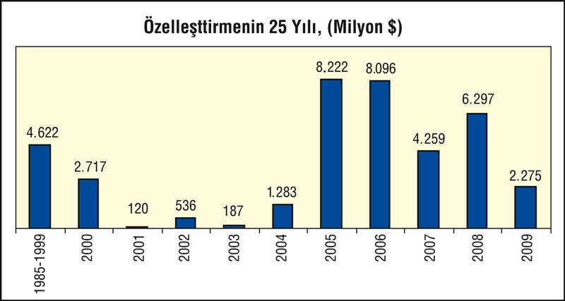

Özellikle AKP iktidarına denk gelen özelleştirme talanı, 2009'da performans kaybetti. 2008'de 6,2 milyar dolar olarak gerçekleşen özelleştirme gelirleri 2009'da 2,3 milyar dolara düşerken 2010 için de Özelleştirme İdaresi belli bir hedef koyamadı.

Özelleştirmenin 25'nci yılı geride kalırken 1985 yılından 2009 sonuna kadar gerçekleştirilen özelleştirme uygulamalarının toplam tutarı yaklaşık 39 milyar doları buldu.
Özelleştirme İdaresi tarafından 1985 yılından itibaren 270 kuruluştaki kamu hisseleri, 22 yarım kalmış tesis, 524 taşınmaz, 8 otoyol, 2 boğaz köprüsü, 103 Tesis, 6 Liman, şans oyunları lisans hakkı ile Araç Muayene İstasyonları özelleştirme kapsamına alındı.
25 kuruluştaki kamu payı ile 4 taşınmaz daha sonra özelleştirme işlemine tabi tutulmaksızın kapsamdan çıkarılmak, tasfiye edilmek veya kapsamda olmayan başka bir kuruluşla birleştirilerek tüzel kişiliği sona erdirilmek üzere devredildi.
2005'e gelindiğinde ve özelleştirme maratonunun gelir hanesine bakıldığında kalburüstü tek özelleştirmenin Petrol Ofisi ile yapıldığı görülüyordu. 1984'ten 2005'e özelleştirme geliri 10 milyar doları ancak buluyordu. Ancak, 20 yıl "ekim" ve "bakım"la geçti, hasat zamanı AKP iktidarında, 2005-2008 dönemi olarak gerçekleşti.
Önceki yıllarda hukuki zemini hazırlanan, tanıtımı yapılan ve IMF disiplini altına giren süreç, dünyadaki likidite bolluğunun rüzgârıyla da sonuç vermeye başlamıştı ve portföydeki kuruluşlar art arda satılmıştı.
2005'te Telekom'un blok satışı, en büyük özelleştirme olarak gerçekleşmişti. 2006'da ikinci ve üçüncü özelleştirmeler Tüpraş ile Erdemir'in satışı ile gerçekleşmişti. 2007'de Halk Bankası hisseleri, Karayolları Levent binası ve Mersin Limanı, en büyük özelleştirmeler olarak gerçekleştirilmişti. 2008, Petkim, Tekel ve Telekom hisse satışları ile önemli özelleştirmeler olarak kayıtlara geçmişti.
2008 sonunda özelleştirmede ulaşılan gelir rakamı 36, 5 milyar doları bulurken bunun 20 milyar doları son 5 yıla aitti. Yüzlerce KİT ve iştiraki, kamu varlığı satılmasına karşılık, özelleştirmeye katkının yüzde 77'si 13 projeden gelmişti.
| ÖZELLEŞTİRİLEN KURULUŞLAR | SATIŞ GELİRİ ( MİLYON $) | Payı % |
| Telekom | 8.478 | 23, 6 |
| Tüpraş | 5.250 | 14, 6 |
| Erdemir | 2.823 | 7, 8 |
| Tekel | 2.608 | 7, 2 |
| Petkim | 2.464 | 6, 8 |
| Halkbank | 1.838 | 5, 1 |
| KGM-Levent | 800 | 2, 2 |
| Mersin Lim. | 755 | 2, 1 |
| Em.San. Otel. | 700 | 1, 9 |
| İş Bankası | 632 | 1, 8 |
| Araç Muay. | 614 | 1, 7 |
| THY | 400 | 1, 1 |
| Tofaş Tic | 333 | 0, 9 |
| Diğer | 8.305 | 23, 1 |
| TOPLAM | 36.000 | 100, 0 |
Kaynak: ÖİB
2008'de büyük krize girildiğinde portföyde elektrik dağıtım şirketleri, otoyollar-köprüler, başka enerji projeleri başta olmak üzere yeni özelleştirmeler vardı.
Ancak 2009'da, özelleştirme gelirleri hedeflenen düzeyin altında kalarak 2,3 milyar dolarda kaldı.
Özelleştirme portföyünde ağırlık enerji KİT'leri, şeker sektörü ve şans oyunlarında. Bir anlamda, kamunun ağır topları satıp savıldı, artık dibi kazınıyor.
2009 sonunda satış devir işlemi tamamlanan özelleştirme uygulamaları; Sakarya ve Başkent Elektrik Dağıtım A.Ş.'nin tamamının işletme hakkının devri ile Tütün, Tütün Mamulleri, Tuz ve Alkol İşletmeleri A.Ş. (TTA), TEDAŞ, Devlet Malzeme Ofisi (DMO) ve Türkiye Şeker Fabrikaları A.Ş.'ye (TŞFAŞ) ait çeşitli taşınmazların özelleştirilmesinden oluştu. İhalesi tamamlanmış olan TCDD İzmir, Derince, Samsun ve Bandırma limanları, Meram Elektrik Dağıtım A.Ş. ile TTA'ya ait çeşitli taşınmazlara ilişkin satış/devir işlemlerinin tamamlanması bekleniyor.
Ayrıca, TTA'ya ait varlıkların ve İzmir Çamaltı tuzlasının özelleştirilmesine ilişkin ihaleler de gerçekleştirildi.
Yeşilırmak, Çoruh ve Osmangazi Elektrik Dağıtım A.Ş.'nin özelleştirilmesine ilişkin ihale ilanlarına çıkılırken Kastamonu, Kırşehir, Turhal, Yozgat, Çorum ve Çarşamba Şeker Fabrikalarının C portföy grubu olarak bir bütün halinde varlık satışı yöntemiyle özelleştirilmesine ilişkin ihale ilanları yayımlandı.
2009 özelleştirme fiyaskolarından biri Milli Piyango'da yaşandı. Şans oyunlarının lisans verilmesi suretiyle özelleştirilmesine ilişkin ihale, teklif sahiplerinin açık artırmada tekliflerini yükseltmemeleri nedeniyle iptal edildi.
Özelleştirme, 25 yıllık serüveninde muhalif partiler, Petrol-İş başta olmak üzere bazı sendikalar, grupların direnişleri ile karşılaşarak ilerledi. Amacı özelleştirmelere karşı durmak olan kısa adıyla KİGEM'ce bir dizi dava açılarak hukuk mücadelesi sürdürüldü.
2000'lerin başlarında 113 özelleştirme projesinin dava konusu olduğu, bazıları için yürütmenin durdurulması ve iptal, bazıları için ret kararları verilmişti, bazı davalar da hala sürmekte.
Özelleştirmeler, toplumsal mülksüzleştirme olarak gerçekleşti, kamusal mülkiyet, çoğunda değerinin çok altında yerli-yabancı tekellere aktarıldı, elde edilen gelirler de yeni kamu mülklerinin tasfiyesi için, Hazine açıklarının kapatılmasında kullanıldı. Özelleştirmelerle çok kişi işini kaybederken, birçok bölge, kamunun yarattığı dışsal ekonomiden, bölgesel kamusal destekten yoksun bırakıldı, özelleştirmeler, işsizliğin daha da büyümesine ve göçlerin hızlanmasına yol açtı.
Krizle birlikte bütçe gelirlerinde önemli bir daralma beklenirken bütçeye yeni kaynak temini için özelleştirmelerin biraz daha kazınması için çaba gösterilmesini beklemek gerekir. Yanı sıra, Tekel işçilerinin maruz kaldıkları 4/C türü güvencesizleştirme, tasfiye operasyonları da hükümetin gündeminden eksik olmayacağa benzemekte, özellikle şeker, çay, enerji sektörlerindeki özelleştirmelerde bu niyetlerin canlı tutulduğu biliniyor.